Hay personas que tienen la suerte de saber qué quieren ser en la vida. No fue mi caso. Pero cuando el cine vino hacia mi vida, todo cambió y no tuve dudas de que esa profesión era mi destino. La licenciatura en Cine de la Escuela de Bellas Artes de La Plata fue la primera en Latinoamérica. Allí, con solo trece compañeros, inicié mi recorrido.
Productor Ejecutivo
2010
“El Viaje de Emilio“
Largometraje de ficción – Chile
Dirección: Abril Trejo
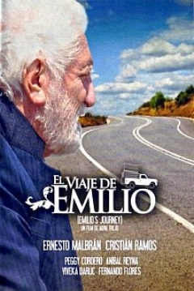
Productor Ejecutivo
2007
"Aguas Milagrosas"
Largometraje de ficción - Chile
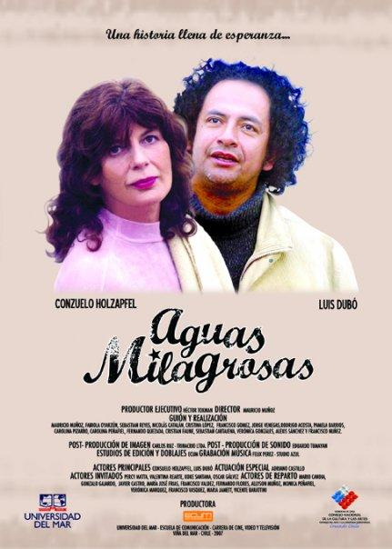
Coordinador de producciones cinematográficas
2002 - 2011
Más de 200 producciones de cortometrajes realizadas en el ámbito académico. Carrera de Cine, Video y Televisión - Escuela de Comunicación - Universidad del Mar - Chile
Director
1990
"Crisis"
Mediometraje – Mendoza, Argentina
Coproducción con el INCAA
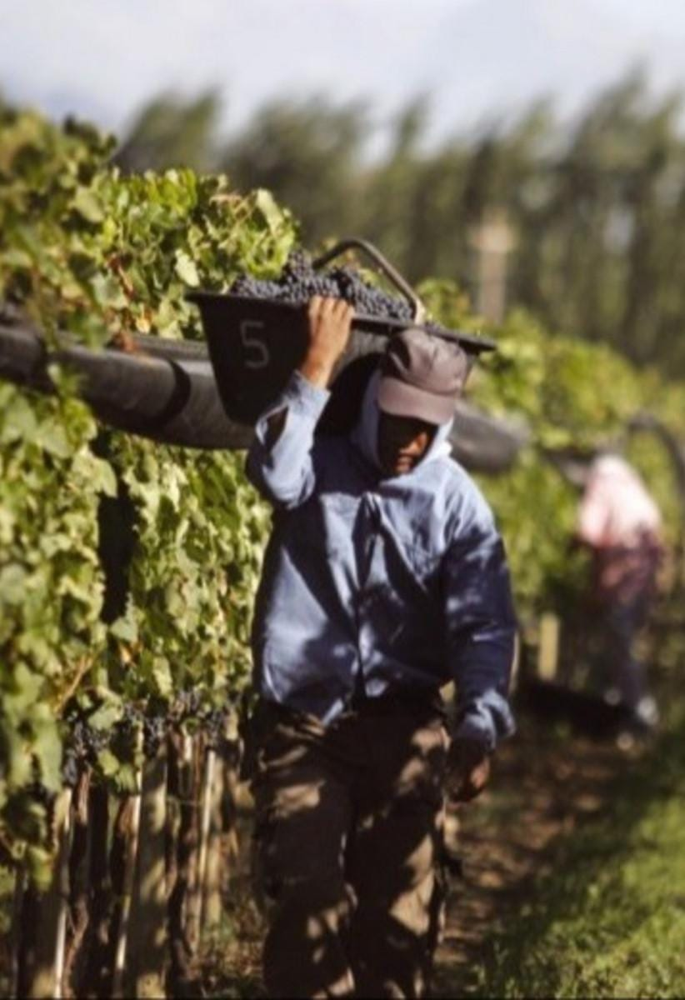
Realizador de publicidad
Director de Fotografía de cortos publicitarios
Asistente de Producción para películas como Invasión, Kuma Ching, La Guita, entre otras
Fotógrafo Profesional
Camarógrafo y realizador de Documentales para Canal 2 de La Plata en 16 mm
Siendo muy joven, cuando estudiaba Biología en Ciencias Exactas, me inscribí en una actividad que hacía la Extensión Universitaria: talleres de alfabetización. Esa experiencia despertó en mí la pasión por la docencia. Comprendí que se aprende mucho más de lo que se enseña. Desde entonces me convertí en el profe, el maestro, un catalizador de proyectos o, desde una visión metafórica de lo que debe ser enseñar, en una enzima, alguien que produce cambios en los otros.
30 AÑOS DE EXPERIENCIA DE DOCENCIA EN EDUCACIÓN SUPERIOR
Docente de Talleres Internacionales
2013 - ACTUALIDAD
Escuela Internacional de Cine y Televisión (EICTV) ∙ San Antonio de los Baños, Cuba
Talleres dictados:
- Laboratorio de Escritura de guion y diseño de producción (2024-2026)
- Escritura y producción de cine de bajo presupuesto (2014-2025)
- Escritura de guion: aprender haciendo (2020-2023)
- Asistencia de dirección: aprender haciendo (2020)
- Realización: aprender haciendo (2020)
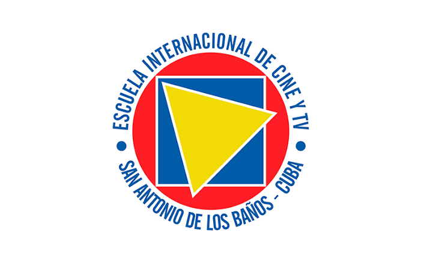
Docente de Talleres Internacionales – Programa UNESCO Transcultura
2023 - 2024
UNESCO · Escuela Internacional de Cine y Televisión (EICTV) · Modalidad online
Taller dictado:
- Escritura y producción de cine de bajo presupuesto. Aprender haciendo. (dos ediciones)
Docente de talleres de cine y guion
2014 - 2018
Escuela Regional Cuyo de Cine y Video ∙ Mendoza, Argentina
Talleres dictados:
- Escritura de guion
- Cómo convertir una idea en un cortometraje
- Escritura de guiones: de la idea al proyecto
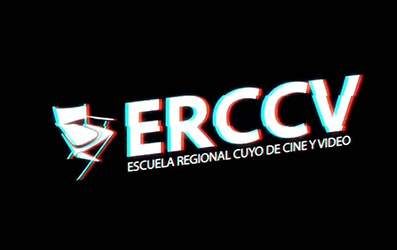
Docente de taller audiovisual
2013
Universidad del Tolima ∙ Ibagué, Colombia
Taller dictado:
- Herramienta de producción y lenguaje audiovisual
Tutor de proyectos de series documentales
2012
Instituto Nacional de Cine y Artes Audiovisuales (INCAA) ∙ Argentina
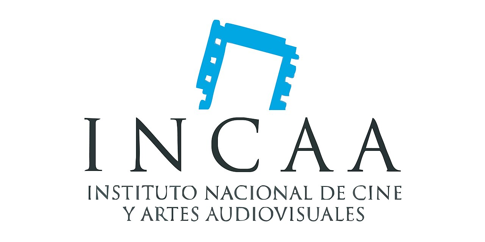
Profesor de Realización Cinematográfica
2012
Universidad de Arte y Ciencias Sociales ∙ Santiago, Chile
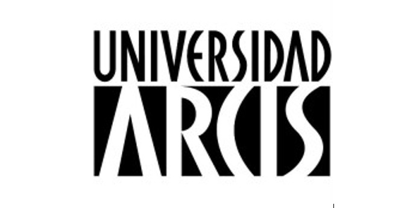
Profesor de Semiótica, Cine y Televisión
2012
Escuela Regional Cuyo de Cine y Video ∙ Mendoza, Argentina
Director de la carrera de Cine, Video y Televisión
2002 - 2012
Escuela de Comunicación de la Universidad del Mar
- Docente de los módulos de Integración del plan de estudios correspondiente a 1º y 2º año, que contempla todas las áreas del Lenguaje Audiovisual a los efectos de la formación de Equipos de Rodaje
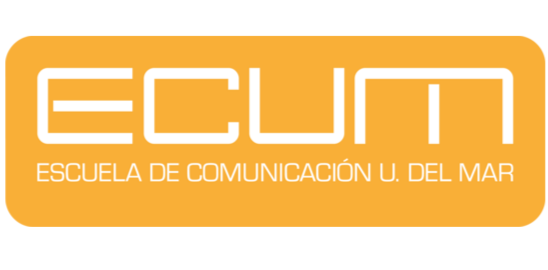
Un guionista es un cineasta que escribe. En ese sentido, mientras trabajaba en cine, me di cuenta del valor que tenía imaginar y escribir mis propias historias. Así fue como descubrí el sentido de las ideas, su tratamiento en el marco de los personajes con sus conflictos, las estructuras y esos finales que brotan de uno mismo.
Guiones por encargo
- “The Border Baby” - Serie de 2 temporadas de 10 capítulos c/u (2026)
- “El Chulabita somnoliento” - largometraje
- “El Hipopotamo de Guayas“ - largometraje
- “Habemus Papa“ - largometraje
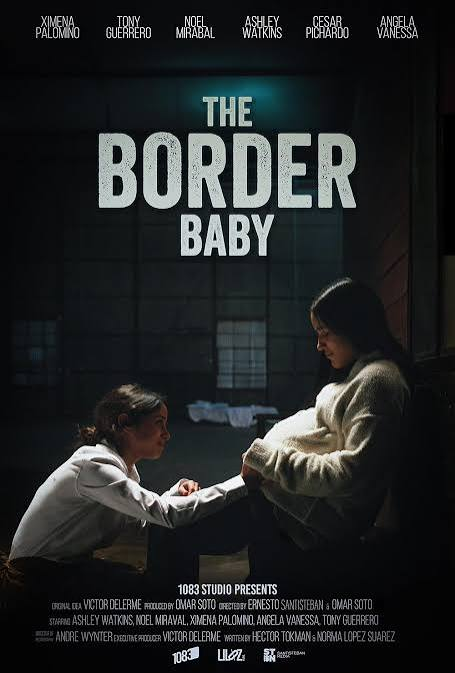
Guiones propios
- “El equilibrista“ (largometraje)
- “El Ciclista“ (serie de 8 capítulos)
- “Juan Cruz“ (largometraje)
- “La noche del Lobo“ (largometraje)
Script Doctor
- “El Pacto“ - cortometraje
- “La Ruta de la Fortuna“ - cortometraje
- “Garabato“ - cortometraje
- “Pase lo que pase“ - largometraje
- “Ida y Vuelta“ - largometraje
- “El dia de la virgen“ - largometraje
- “El Muro“ - largometraje
- “Sun Sone“ - largometraje
- “First Generation“ - largometraje
FALTA INTRODUCCIÓN
...
2023
...

...
2019
...
FALTA INTRODUCCIÓN
FALTA INTRODUCCIÓN
"Hector Tokman: el argentino que hace cine, enseñando sobre cine de bajo presupuesto"
2020
TVN Panamá
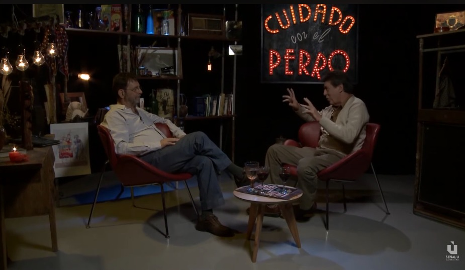
"“Invasión”: a 50 años, las palabras de Hector Tokman"
2019
Los Andes
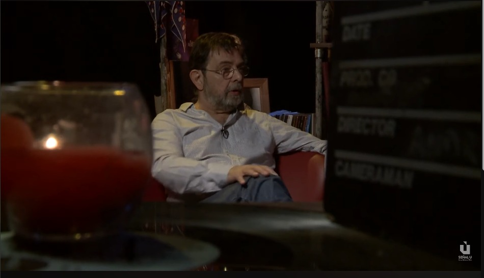
"Cuidado con el Perro | Temporada 2 | Capítulo 141 - Hector Tokman"
2016
Señal U
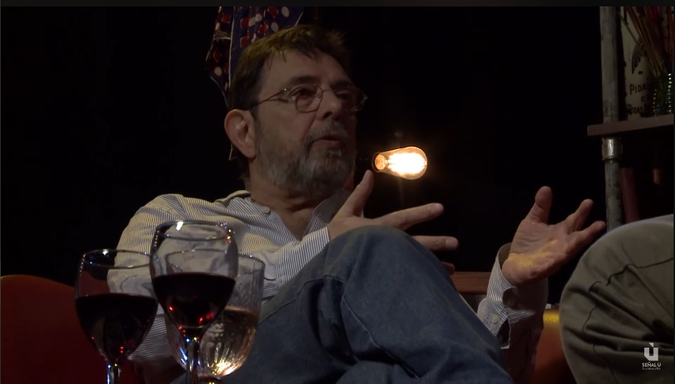
Si te interesa saber más sobre mis talleres, trabajos o simplemente quieres ponerte en contacto, puedes escribirme a través de los siguientes canales: